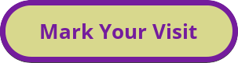

Checkpoint Number
{% for x in range (0, numOfCheckpoints) %}
{{x+1}}
{% endfor %}

{% for checkpoint in checkpointList %}
{% if base_format == "marker" %}
{% endif %} {% if base_format == "geolocation" %}
{% endif %}
{% endfor %}